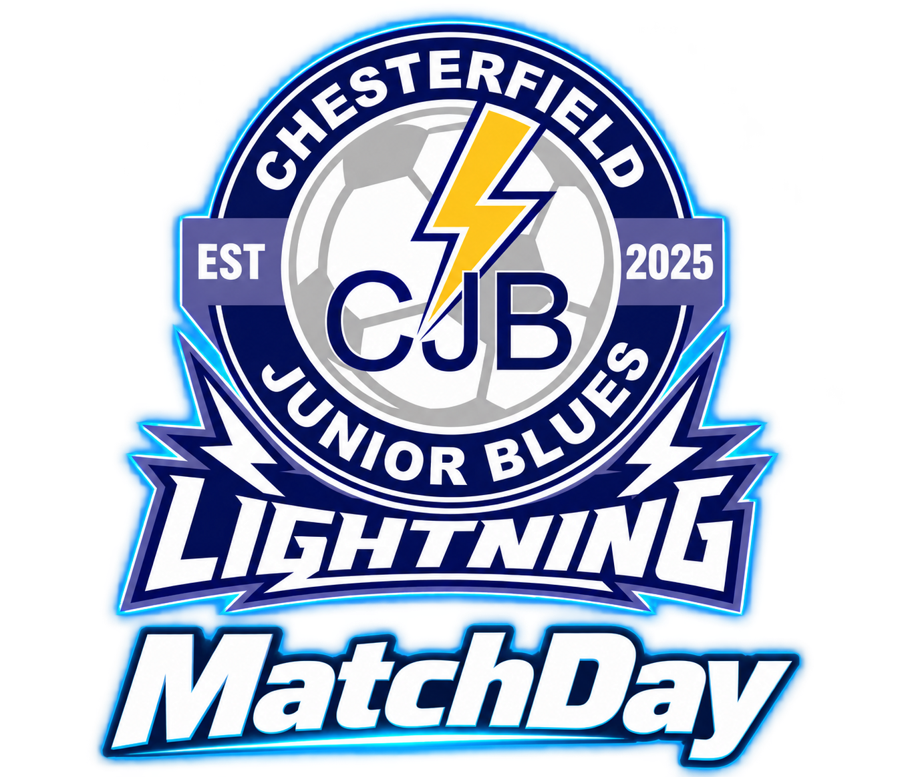

Privacy policy
Updated 1 November 2026
Who is responsible
Matt Hoyland is responsible for CJB Lightning MatchDay in a personal capacity. For support, access, correction or deletion questions, contact mhoyland@btopenworld.com.
What the app stores
The app stores account names, email addresses and account identifiers; family links to players; fixture and training availability; votes; and team, player and match records such as results and playing time. Coaches can upload team photos and badges and publish posters for linked families. Password authentication is handled by Supabase; coaches cannot read your password.
How information is used and shared
Information is used to run the team, arrange fixtures and training, manage availability, record matches and provide family updates. Access depends on your role and family links. Coaches can see availability; linked families can see information published for them. Parent admins can manage labelled supporter votes. Anyone you share an exported poster or backup with can retain that file.
Services and devices
Supabase provides authentication, database, file storage and server functions. The configured Hostinger email service sends account verification messages. Apple and Expo provide distribution and build services; their own service policies apply. Private data is not deliberately made public through the App Store listing. The companion Watch receives match information from the phone. The app does not sell personal information or use it for advertising.
Storage and retention
Saved team and season records remain while the team uses them. Account data is kept until deleted or no longer needed. On deletion, account credentials, profile, access links, personal availability responses and votes, and uploads attributed to that account are removed from the active service. Shared fixtures, player records, results and confirmed awards remain, with creator attribution removed where applicable. Deleting a family account does not automatically delete a child’s team records: contact Matt about those records. Provider backups and security logs follow their configured retention; separately exported files and copies on other devices are not remotely erased.
Your choices
You can update availability, manage votes where permitted, request corrections and request information about your data by email. Account → Delete account lets you permanently delete your own account after confirming your password. The only owner of a team must first appoint another owner to preserve team administration. Upload unsynchronised match changes before deleting. Deletion removes this account’s prepared matches and caches from this phone where possible. Other offline devices must reconnect to receive access changes.
Photos and children’s information
The app is intended for adult coaches and family supporters. Player information is managed by the team rather than by child accounts. Only upload or share photos and player information you are authorised to use. Contact Matt if you want a photo removed, a family link changed or a child’s information reviewed.